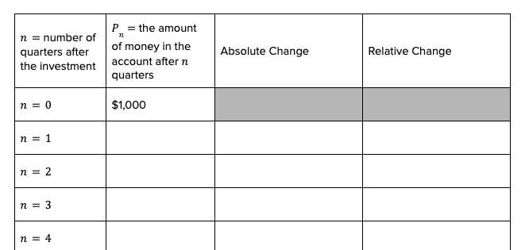

Section 4.1 Two Types of Relationships
In this section, we’ll explore four different sceanorios. Through our work with these scenarios, we’ll discover two different types of formulas, recursive and explicit, and the two main types of relationships between quantities that we want to explore, linear and exponential.
- Scenario 1:
You wish to grow $1,000 of your savings. You choose an option based on simple interest, which means the money you make will be a fixed amount each time period based on a percentage of the initial investment. A payout of 40% of the initial investment per quarter, or $400 every 3 months.
- Scenario 2:
Consider the same $1,000 investment, but this time you choose an option based on compound interest, which means the money made changes each time period based on the total accrued value of the initial investment. Your investment will increase 10% per quarter (10% growth every 3 months).
- Scenario 3:
You take an 800mg dose of ibuprofen. Your body (kidneys and liver) metabolizes the drug reducing the amount in your bloodstream by half every two hours.
- Scenario 4:
A certain scarf pattern calls for a 400 yard ball of yarn. Each row that is knitted uses 9 inches or ¼ of a yard of yarn.
The following activity uses all four scenarios. This activity is best done in groups where the full group determines the general process for each task, and then the computations are split up to individuals, rotating through different scenarios for new tasks. Whether working in a group or individually, the hints in this activity will describe a general process or have particular answers you can check.
Activity 4.1.1. Exploring the Four Scenarios.
Make a chart for each scenario with four columns and at least ten rows. Label the columns with
-
\(n\)
number of stages (quarters after initial investment, two-hour time increments since intitial dose, or number of rows knit);
-
\(P_n\)
the quantity (amount of money in the account, amount of drug present, amount of yarn remaining) at the
\(n^\text{th}\) stage;
- Absolute Change
will be the absolute change between the row and the previous row; and
- Relative Change
will be the relative (percentage) change between the current row and previous row.
Fill in the first column with values of \(n\) starting with \(n=0\text{.}\) In the \(n=0\) row and the \(P_n\) column, enter the initial amount of the quantity. The chart for the first and second scenarios should look something like:

A chart the matches the descriptions above.
(a) Initial Stage.
Determine the value of the quantity in question in each scenario after a single “stage”: the $1,000 investment after one quarter with each option, the amount of the drug in the body after two hours, and the amount of yarn remaining in the ball after knitting one row.
Hint.
The amount of yarn left after knitting one row is 399.75 yards.
(b) Future Stages.
Once you’re comfortable with how to get from one stage to the next, complete the second column (the one labeled
\(P_n\)) for each scenario. As long as you understand the process for each scenario, this is a good place to divide up the busy work if you’re working with others.
Hint.
After one year (four quarters, so
\(n = 4\)), the amount of money in the account in Scenario 2 with compound interest is $1,464.10.
(c) Absolute Change.
Recall how to compute absolute change and compute the absolute change between stage
\(n = 0\) and
\(n = 1\) for each scenario.
Hint.
Use
Definition 3.1.14. The absolute change in the amount of money in the account in Scenario 1, with simple interest, is an increase of $400.
(d) More Absolute Change.
Complete the third column in the chart for each scenario by computing the absolute change between the previous stage and the stage in that row.
Hint.
Remember to
only go back one stage for each computation; NOT all the way back to the initial/starting value. The absolute change from the
\(n = 4\) stage (4 rows in) to the
\(n = 5\) stage (5 rows knitted) in the amount of yand remaining is a decrease of 0.25 yards.
(e) Relative Change.
Recall how to compute relative change and compute the relative change between stage
\(n = 0\) and
\(n = 1\) for each scenario.
Hint.
Use
Definition 3.1.14. The relative change in the amount of ibuprofen in the body is a decrease of 50%.
(f) More Relative Change.
Complete the fourth column in the chart for each scenario by computing the relative change between the previous stage and the stage in that row.
Hint.
Remember to
only go back one stage for each computation; NOT all the way back to the initial/starting value. The relative change from the
\(n = 3\) stage (3 quarters or 9 months since the initial investment) to the
\(n = 4\) stage (one year later) in the amount of money in the compound interest account is an increase of 10%.
(g) Noticing Similarities.
What do you notice about...
-
The second column (
\(P_n\)) in Scenarios 1 and 2 vs Scenarios 3 and 4?
-
The third column (Absolute Change) in Scenarios 1 and 4 vs Scenarios 2 and 3?
-
The fourth column (Relative Change) in Scenarios 1 and 4 vs Scenarios 2 and 3?
We’ll use the data you generated and the patterns you noticed to discuss the two types of formulas we’ll use (recursive and explicit) and the two main types of relationships we’ll study (linear and exponential). We’ll dive more deeply into many examples in the next two sections, so while the information should make sense and align with your work in the activity, don’t worry if you don’t feel like a master of this material … yet.
Definition 4.1.1. Recursive Formula.
A
recursive formula gives instructions for getting a quantity on a list from the previous quantity (or quantities).
For example, the instructions for getting from the value of the investment in the simple interest scenario are “add $400 to the previous value.” As a formula, this can look like
\(P_n = P_{n-1} + 400\text{.}\) This
\(n\) (or other small font symbol down low) is called a subscript, and we say
\(P_n\) as “P sub n,” and it means the value of the variable
\(P\) (in this case the amount of money in the account) at the
\(n^{\text{th}}\) stage (in this case
\(n\) quarters after the initial investment).
If we want to know the value after 2 quarters, we’d be looking for \(P_2\text{.}\) We can follow the formula:
\begin{align*}
P_2 \amp = P_{2-1} + 400, \amp \text{using the recursive formula with } n=2,\\
\amp = P_1 + 400, \amp \text{since } 2-1 = 1,\\
\amp = \left(P_{1-1} + 400\right) + 400, \amp \text{using the recursive formula again with } n=1,\\
\amp = P_0 + 400 + 400, \amp \text{since } 1-1 = 0,\\
\amp = 1000 + 400 + 400 \amp \text{since } P_0 = 1000 \text{ is the starting value, and}\\
\amp = 1800
\end{align*}
Check for Understanding 4.1.2. Yarn!
Determine the recursive formula for the amount of yarn left after knitting
\(n\) rows in Scenario 4.
Solution.
A good first step is to use the thinking from the activity, and aim to put the instructions into words. “Each row uses 1/4 yard of yarn, so to get the amount of yarn left subtract 1/4 from the amount remaining after knitting the previous row.”
Putting this into a formula looks like
\(P_n = P_{n-1} - 1/4\text{.}\)
While the notation might get confusing, the thinking behind recursive formulas is usually pretty intuitive for folks. These types of formulas are exactly what we use in spreadsheets as well. They work great when one has some access to helpful technology that can do
many computations
very quickly. In the simple interest example, if we wanted to know the value of the investment 50 years in the future, we’d need to compute
\(P_{200}\text{,}\) and that would take a very long time by hand! That’s where explicit formulas come in handy.
Definition 4.1.3. Explicit Formula.
An
explicit formula does not depend on previous values; it gives mathematical instructions for finding any value.
To get an explicit formula for the simple interest example, we can recall that the repeated addition of $400 can be simplified into multiplication:
\begin{equation*}
P = 1000 + 400n.
\end{equation*}
Phrased another way, “Adding 400 \(n\) times is the same as 400 times \(n\text{.}\)”
Now, if we want to compute the value, \(P\text{,}\) of the investment after 50 years, we need only determine the value of \(n\) that is equivalent to 50 years. Since there are four quarters in a year, the \(n\) we want is \(n=4 \times 50 = 200\text{.}\) The explicit formula then tells us
\begin{align*}
P \amp = 1000 + 400(200)\\
\amp = 1000 + 80000\\
\amp = 81000
\end{align*}
After 50 years the investment will have grown to $81,000!
We’ve dropped the use of the subscript here. You don’t have to do that. Often, in explicit formulas you’ll see that input variable (
\(n\) for us) in parentheses,
\(P(n)\text{,}\) rather than a subscript. This is known as
function notation and
\(P(n)\) is read as “
\(P\) of \(n\text{.}\)”
Check for Understanding 4.1.4. Explicit Yarn.
Determine an explicit formula for the amount of yarn left after knitting
\(n\) rows in Scenario 4.
Solution.
Consider what is being repeated at each stage; we’re subtracting off 1/4. We could repeatedly subtract off 1/4
\(n\) times, or we could first multiply 1/4 by
\(n\) and then subtract. Multiplying 1/4 by
\(n\) is written as
\(\frac{1}{4}n\text{,}\) and we want to subtract that off from our starting amount of 400 yards. That looks like
\(P = 400 - \frac{1}{4}n\) when it is all put together.
Note that you can choose any variables or notation you like. Using
\(r\) for the number of rows and
\(L\) for the length of yarn left makes sense. Then the formula would look like
\(L_r = 400 - \frac{1}{4}r\) using subscript notation, or
\(L(r) = 400 \frac{1}{4}r\) in function notation, or just
\(L = 400 -\frac{1}{4}r\text{.}\)
We saw two different types of relationships in these four scenarios. The simple interest and knitting yarn examples are both
linear relationships. The compound interest and ibuprofen examples are both
exponential relationships. The distinction between the two should be what you noticed in the last part of the activity exercise.
Definition 4.1.5. Linear Change.
A quantity is changing
linearly if the absolute change is consistent. The consistent absolute change is called the
common difference, and will be denoted
\(d\) in the formulas below.
In the simple interest example, the absolute change is $400 each quarter, so
\(d = 400\text{.}\) In the yarn example, the absolute change is a decrease of
\(\frac{1}{4}\)yard for each row,
\(d = -\frac{1}{4}\text{.}\) The common difference appears as addition or subtraction in the recursive formula for linear change and as the slope in the explicit formula.
Definition 4.1.6. Exponential Change.
A quantity is changing
exponentially if the relative (percentage) change is consistent. The consistent relative change is called the
growth rate (or
decay rate if it is negative) and is denoted with an
\(r\) in the formulas.
In the compound interest example, the percent change is 10% each quarter, so
\(r = 0.1\text{.}\) In the ibuprofen example, the percent change is a decrease of
\(\frac{1}{2}\) or 50% for each two-hour time interval,
\(r = -\frac{1}{2} = -0.5\text{.}\) The value that appears in the formulas is not the growth/decay rate, but the
multiplier, which is
\(1 + r\) and is also consistent in exponential relationships. The consistent multiplier appears as multiplication in the recursive formula and as the base of the exponential in the explicit formula.
The general information about linear and exponential realtionships and the coresponding recursive and explicit formulas is summarized here:
| The ABSOLUTE change is consistent. |
|
The RELATIVE change is consistent. |
|
We denote this common difference with \(d\text{.}\)
|
|
We denote this common rate with \(r\text{.}\)
|
|
The quantity is growing/increasing if \(d \gt 0\text{.}\)
|
|
The quantity is growing/increasing if \(r \gt 0\text{,}\) or equivalently, \(r + 1 \gt 1\text{.}\)
|
|
The quantity is decaying/decreasing if \(d \lt 0\text{.}\)
|
|
The quantity is decaying/decreasing if \(-1 \lt r \lt 0\text{,}\) or equivalently, \(0 \lt r + 1 \lt 1\text{.}\)
|
The format for the recursive formula is: \(P_n = P_{n-1} + d\text{.}\)
|
|
The format for the recursive formula is: \(P_n = (1 + r)P_{n-1}\text{.}\)
|
|
The format for the explicit formula is: \(y = y_0 + dx\text{.}\)
|
|
The format for the explicit formula is: \(y = y_0(1 + r)^x\text{.}\)
|
The last piece of the end of the activity asked you to notice the similarties between the first two scenarios and the second two. The two financial accounts are growing over time where as the amount of drug and yarn remaining is decreasing. We organize the specific information for all four example scenarios below:
| GROWTH |
\begin{align*}
d \amp = 400\\
P_n \amp = P_{n-1} + 400\\
y \amp = 1000 + 400x
\end{align*}
|
\begin{align*}
r \amp = 0.1\\
P_n \amp = (1.1)P_{n-1}\\
y \amp = 1000(1.1)^x
\end{align*}
|
|
|
|
| DECAY |
\begin{align*}
d \amp = -1/4\\
P_n \amp = P_{n-1} - 1/4\\
y \amp = 400 - (1/4))x
\end{align*}
|
\begin{align*}
r \amp = -0.5\\
P_n \amp = (0.5)P_{n-1}\\
y \amp = 800(0.5)^x
\end{align*}
|
We’ll see more examples of how to determine the explicit formulas for these situations and how to use those models in the next two sections.